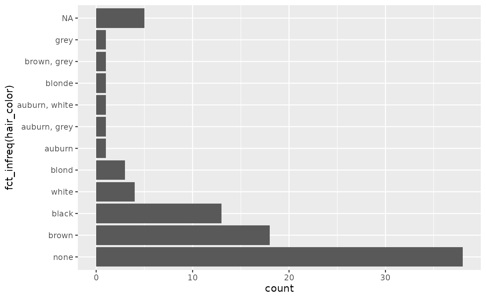

The goal of the forcats package is to provide a suite of useful tools that solve common problems with factors. Factors are useful when you have categorical data, variables that have a fixed and known set of values, and when you want to display character vectors in non-alphabetical order. If you want to learn more, the best place to start is the chapter on factors in R for Data Science.
Ordering by frequency
Let’s try answering the question, “what are the most common hair colors of star wars characters?” Let’s start off by making a bar plot:
ggplot(starwars, aes(x = hair_color)) +
geom_bar() +
coord_flip()
That’s okay, but it would be more helpful the graph was ordered by
count. This is a case of an unordered categorical
variable where we want it ordered by its frequency. To do so, we can use
the function fct_infreq():
ggplot(starwars, aes(x = fct_infreq(hair_color))) +
geom_bar() +
coord_flip()
Note that fct_infreq() it automatically puts NA at the
top, even though that doesn’t have the smallest number of entries.
Combining levels
Let’s take a look at skin color now:
starwars %>%
count(skin_color, sort = TRUE)
#> # A tibble: 31 × 2
#> skin_color n
#> <chr> <int>
#> 1 fair 17
#> 2 light 11
#> 3 dark 6
#> 4 green 6
#> 5 grey 6
#> 6 pale 5
#> 7 brown 4
#> 8 blue 2
#> 9 blue, grey 2
#> 10 orange 2
#> # … with 21 more rowsWe see that there’s 31 different skin colors - if we want to make a
plot this would be way too many to display! Let’s reduce it to only be
the top 5. We can use fct_lump() to “lump” all the
infrequent colors into one factor, “other.” The argument n
is the number of levels we want to keep.
starwars %>%
mutate(skin_color = fct_lump(skin_color, n = 5)) %>%
count(skin_color, sort = TRUE)
#> # A tibble: 6 × 2
#> skin_color n
#> <fct> <int>
#> 1 Other 41
#> 2 fair 17
#> 3 light 11
#> 4 dark 6
#> 5 green 6
#> 6 grey 6We could also have used prop instead, which keeps all
the levels that appear at least prop of the time. For
example, let’s keep skin colors that at least 10% of the characters
have:
starwars %>%
mutate(skin_color = fct_lump(skin_color, prop = .1)) %>%
count(skin_color, sort = TRUE)
#> # A tibble: 3 × 2
#> skin_color n
#> <fct> <int>
#> 1 Other 59
#> 2 fair 17
#> 3 light 11Only light and fair remain; everything else is other.
If you wanted to call it something than “other”, you can change it
with the argument other_level:
starwars %>%
mutate(skin_color = fct_lump(skin_color, prop = .1, other_level = "extra")) %>%
count(skin_color, sort = TRUE)
#> # A tibble: 3 × 2
#> skin_color n
#> <fct> <int>
#> 1 extra 59
#> 2 fair 17
#> 3 light 11What if we wanted to see if the average mass differed by eye color?
We’ll only look at the 6 most popular eye colors and remove
NAs.
avg_mass_eye_color <- starwars %>%
mutate(eye_color = fct_lump(eye_color, n = 6)) %>%
group_by(eye_color) %>%
summarise(mean_mass = mean(mass, na.rm = TRUE))
avg_mass_eye_color
#> # A tibble: 7 × 2
#> eye_color mean_mass
#> <fct> <dbl>
#> 1 black 76.3
#> 2 blue 86.5
#> 3 brown 66.1
#> 4 orange 282.
#> 5 red 81.4
#> 6 yellow 81.1
#> 7 Other 68.4Ordering by another variable
It looks like people (or at least one person) with orange eyes are
definitely heavier! If we wanted to make a graph, it would be nice if it
was ordered by mean_mass. We can do this with
fct_reorder(), which reorders one variable by another.
avg_mass_eye_color %>%
mutate(eye_color = fct_reorder(eye_color, mean_mass)) %>%
ggplot(aes(x = eye_color, y = mean_mass)) +
geom_col()
Manually reordering
Let’s switch to using another dataset, gss_cat, the
general social survey. What is the income distribution among the
respondents?
gss_cat %>%
count(rincome)
#> # A tibble: 16 × 2
#> rincome n
#> <fct> <int>
#> 1 No answer 183
#> 2 Don't know 267
#> 3 Refused 975
#> 4 $25000 or more 7363
#> 5 $20000 - 24999 1283
#> 6 $15000 - 19999 1048
#> 7 $10000 - 14999 1168
#> 8 $8000 to 9999 340
#> 9 $7000 to 7999 188
#> 10 $6000 to 6999 215
#> 11 $5000 to 5999 227
#> 12 $4000 to 4999 226
#> 13 $3000 to 3999 276
#> 14 $1000 to 2999 395
#> 15 Lt $1000 286
#> 16 Not applicable 7043Notice that the income levels are in the correct order - they start
with the non-answers and then go from highest to lowest. This is the
same order you’d see if you plotted it as a bar chart. This is not a
coincidence. When you’re working with ordinal data, where there is an
order, you can have an ordered factor. You can examine them with the
base function levels(), which prints them in order:
levels(gss_cat$rincome)
#> [1] "No answer" "Don't know" "Refused" "$25000 or more"
#> [5] "$20000 - 24999" "$15000 - 19999" "$10000 - 14999" "$8000 to 9999"
#> [9] "$7000 to 7999" "$6000 to 6999" "$5000 to 5999" "$4000 to 4999"
#> [13] "$3000 to 3999" "$1000 to 2999" "Lt $1000" "Not applicable"But what if your factor came in the wrong order? Let’s simulate that
by reordering the levels of rincome randomly with
fct_shuffle():
reshuffled_income <- gss_cat$rincome %>%
fct_shuffle()
levels(reshuffled_income)
#> [1] "$20000 - 24999" "$7000 to 7999" "$5000 to 5999" "$8000 to 9999"
#> [5] "$3000 to 3999" "$15000 - 19999" "$4000 to 4999" "$1000 to 2999"
#> [9] "No answer" "Lt $1000" "$10000 - 14999" "Don't know"
#> [13] "$6000 to 6999" "Refused" "Not applicable" "$25000 or more"Now if we plotted it, it would show in this order, which is all over the place! How can we fix this and put it in the right order?
We can use the function fct_relevel() when we need to
manually reorder our factor levels. In addition to the factor, you give
it a character vector of level names, and specify where you want to move
them. It defaults to moving them to the front, but you can move them
after another level with the argument after. If you want to
move it to the end, you set after equal to
Inf.
For example, let’s say we wanted to move Lt $1000 and
$1000 to 2999 to the front. We would write:
fct_relevel(reshuffled_income, c("Lt $1000", "$1000 to 2999")) %>%
levels()
#> [1] "Lt $1000" "$1000 to 2999" "$20000 - 24999" "$7000 to 7999"
#> [5] "$5000 to 5999" "$8000 to 9999" "$3000 to 3999" "$15000 - 19999"
#> [9] "$4000 to 4999" "No answer" "$10000 - 14999" "Don't know"
#> [13] "$6000 to 6999" "Refused" "Not applicable" "$25000 or more"What if we want to move them to the second and third place?
fct_relevel(reshuffled_income, c("Lt $1000", "$1000 to 2999"), after = 1) %>%
levels()
#> [1] "$20000 - 24999" "Lt $1000" "$1000 to 2999" "$7000 to 7999"
#> [5] "$5000 to 5999" "$8000 to 9999" "$3000 to 3999" "$15000 - 19999"
#> [9] "$4000 to 4999" "No answer" "$10000 - 14999" "Don't know"
#> [13] "$6000 to 6999" "Refused" "Not applicable" "$25000 or more"